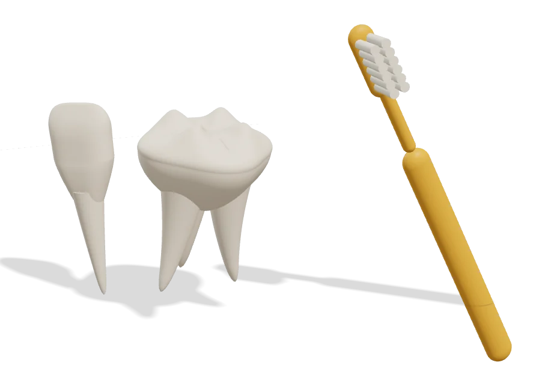

A Gulberg Practice Built on Trust
Three dentists, five chairs, and patients who have been coming back since 2012.

Mehr started in 2012 with two chairs and one rule: nobody leaves without understanding their own X-ray.
Most of our patients arrive a little nervous, often because of a rushed experience somewhere else. So we built the clinic around time. Longer appointments, fewer patients per day, and a dentist who sits with you and explains, in Urdu or English, before anything happens.
Today the studio has grown to three dentists, but the rule has not changed.
Our dentists
Each of us has a focus, and we refer to each other inside the studio, so you never get sent across town.
How we work
The parts of dentistry you do not usually see, and that matter most.
Sterile, and you can see it
Every instrument goes through washing, a Class B autoclave and a sealed pouch with a dated indicator. We open the pouch in front of you.
Low-dose digital imaging
Digital sensors use a fraction of the radiation of film. A 3D scan is taken only when planning implants or aligners needs it.
Written plans
Every course of treatment comes with a written plan and a fixed fee. If something changes during treatment, we stop and talk before going on.

Come and see us Your first visit is relaxed
A first appointment takes about forty minutes, and most of it is talking and looking, not drilling.